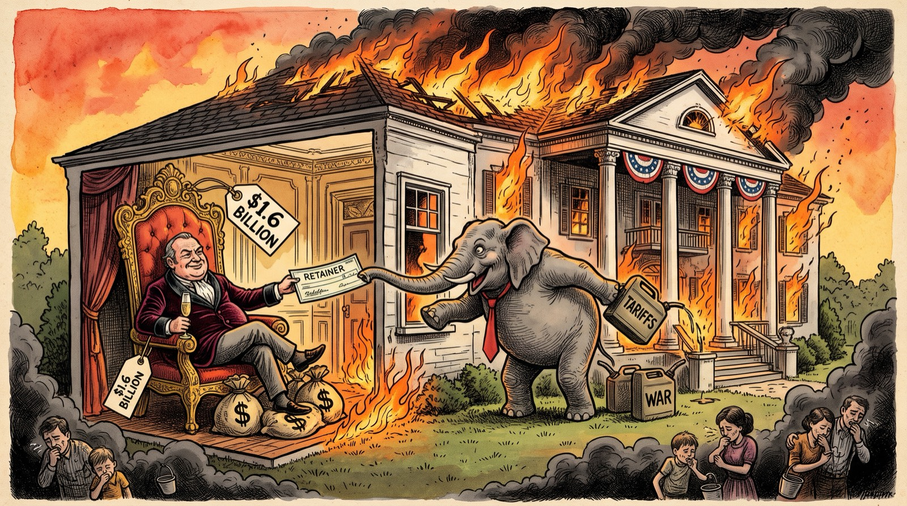
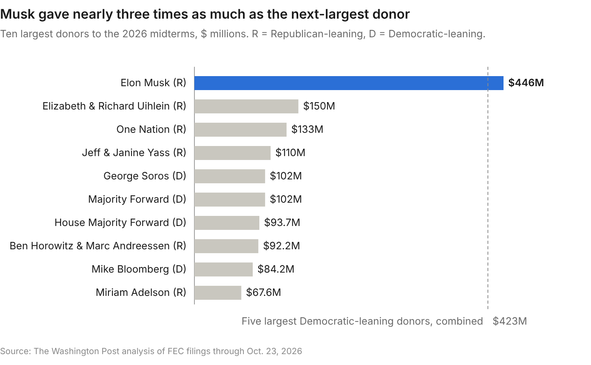

Bugün akışıma tartışmaya değer bir paylaşım düştü.
"Bu oyunun sonunda neyin hedeflendiğini bir türlü kafamda oturtamıyorum. Gezegeni mahvedersen, küresel ekonomiyi çökertirsen, sıradan insanları hiçbir şey alamayacak kadar yoksul bırakırsan, milyarderler o kadar parayla tam olarak ne yapmayı planlıyor? Dünya yıkılırken yeraltı sığınaklarında oturup banka bakiyelerine mi bakacaklar? Servet ancak etrafında işleyen bir toplum varsa değerlidir. Peki tam olarak neyi kazanmaya çalışıyorlar?"
Paylaşım, The Washington Post'un 2026 ara seçimlerinin en büyük 50 bağışçısını sıraladığı haftaya denk geldi. Bu bağışçılar seçim yarışına toplam 2,77 milyar dolar akıttı; büyük kısmını da sınırsız bağış kabul edebilen süper PAC'ler üzerinden. Elon Musk tek başına 446 milyon dolar verdi. Modern Amerikan tarihinde hiçbir bireysel bağışçı bu kadar para vermemişti.
Viral paylaşım, milyarderlerin davranışını bir bilmece gibi ele alıyor. Oysa ortada bilmece filan yok. O listedeki her bağışçı, gayet rasyonel biçimde bir evde oda satın alıyor. Tek bir pürüz var: Çoğu bu odaları, evi bizzat ateşe veren partiden satın alıyor.

Giriş ücreti
Para ikiye bir oranında Cumhuriyetçilere akıyor: Cumhuriyetçi eğilimli bağışçılardan 1,67 milyar dolar, Demokrat eğilimli bağışçılardan 832 milyon dolar, özel çıkar gruplarından da 264 milyon dolar.

Musk tek başına, en büyük beş Demokrat eğilimli bağışçının toplamından fazlasını verdi ve Cumhuriyetçi eğilimli paranın yaklaşık %27'sini karşıladı. Servetine oranla ise bozuk para. Yaklaşık 1 trilyon dolarlık bir servette 446 milyon dolar, %0,045 ediyor.
Fed'in son anketine göre medyan Amerikan ailesinin serveti 215.900 dolar. Aynı oran bu aile için yaklaşık 96 dolar ediyor. Ulusal siyasete rekor kıran bir müdahale, Musk'a bir ailenin dışarıda yediği akşam yemeği kadara mal oluyor.
Mesele tek bir partiyle sınırlı değil. George Soros (102 milyon dolar), Mike Bloomberg (84 milyon dolar) ve Reid Hoffman (41 milyon dolar) da listede; bağışçılarını gizleyen Demokrat yanlısı gruplar da öyle. Ama terazi dengesiz ve modern Amerikan siyasetinin en kalın çek defteri tek bir yönü gösteriyor.
Ne satın alıyorlar?
Post'un listesini bir siyasi kadro gibi değil de bir yatırım portföyü gibi okursanız stratejiyi görmemek imkânsız. Bunlar geniş kapsamlı ideolojik haçlı seferleri değil; getirisi son derece belirli, dar hedefli bahisler.
- Yapay zekâ. Eyalet yasalarını geçersiz kılacak tek bir federal yapay zekâ kural kitabı isteyen Leading the Future'ın arkasında Andreessen Horowitz'in kurucuları (50 milyon dolar) ve OpenAI'dan Greg Brockman (25 milyon dolar) var. Senato, eyalet yasalarını devre dışı bırakan bu hükmü geçen yılki bütçe yasasından 99'a karşı 1 oyla çıkarmıştı. Karşı tarafın da cebi derin: Anthropic, yapay zekâya güvenlik bariyerleri getirilmesini savunan bir gruba 20 milyon dolar verdi.
- Vergiler. En geniş kapsamlı ödül bu. CBO'nun tahminine göre geçen yılki bütçe uzlaşma yasası, en yoksul yüzde onluk dilimdeki hanelere yılda yaklaşık 1.200 dolara mal olacak; bunun büyük kısmı Medicaid ve SNAP kesintilerinden geliyor. En zengin yüzde onluk dilim ise yılda yaklaşık 13.600 dolar kazanıyor, çoğunu da vergi indirimlerinden.
- Kripto. Coinbase, Ripple, Winklevoss ikizleri ve Foris Dax yaklaşık 200 milyon dolar verdi; bunun önemli bir kısmı kripto yanlısı süper PAC'lere gitti. Kongre 2024'ten bu yana bir stablecoin yasası çıkardı ve kriptoya dost düzenleyicilerin atamasını onayladı. Sıradaki ödül olan piyasa yapısı yasası ise Senato'da takılıp kaldı.
Bunlar hediye değil, yatırım. Getirileri de akıl almaz olabiliyor. Yurtdışındaki kârların ülkeye getirilmesi için 2004'te tanınan kurumlar vergisi tatilini inceleyen bir çalışma, şirketlerin bu tatil için lobiye harcadıkları her dolara karşılık 220 dolardan fazla vergi tasarrufu elde ettiğini ortaya koydu. Yani %22.000 getiri.
Böyle bir oran karşısında 446 milyon dolar savurganlık değil, hesaplanmış bir pozisyon. Peki neyi kazanmaya çalışıyorlar? Çok belirli bir şeyi ve çoğu zaman da kazanıyorlar. Bir kripto borsasının gezegene ihtiyacı yok; ihtiyacı olan dost bir düzenleyici ve kendi istediği gibi yazılmış bir yasa.
Kundakçıya para vermek
Bu paranın çoğunu toplayan parti kendini büyümenin partisi olarak pazarlıyor, iktidara gelince de büyümenin aleyhine yönetiyor.
- Gümrük vergileri. Yüksek Mahkeme şubatta en kapsamlı olanları iptal ettikten sonra bile ortalama efektif gümrük vergisi oranı, 2025'i saymazsak 1940'ların başından beri görülmemiş seviyede kaldı.
- Savaş. İran savaşı Hürmüz Boğazı'nı tıkadı. Aradan aylar geçti, petrolün varili hâlâ 100 doların üzerinde.
- Borç. Big Beautiful Bill, faiz dâhil 2035'e kadar bütçe açıklarına 4,7 trilyon dolar ekleyecek. Suçu atacak bir resesyon yokken bütçe açığı geçen yıl GSYH'nin %6,2'sine ulaştı ve faiz ödemeleri artık savunma harcamalarını geçti. On yıllık Hazine tahvillerinin faizi son onlarca yılın zirvesinde, 30 yıllık konut kredisi faizleri de yeniden %7'nin üzerinde. Konut ya da taşıt kredisi olan her aile artık kundakçının hesabının faizini ödüyor.
- Göç. H-1B vizesine getirilen 100.000 dolarlık ücret, en çok etkilenen şirketlerde kura başvurularını %85 ya da daha fazla azalttı. Cato'nun hesabına göre göçteki düşüşün yaklaşık dörtte üçü sınırdan değil, yasal kanallardan geldi.
- Bilim. Beyaz Saray, iki yıl üst üste NSF'nin bütçesini yarıdan fazla kesmeyi önerdi. Kongre buna yanaşmadı, ama kurum binden fazla hibeyi çoktan iptal etmişti.
- Gezegen. EPA, sera gazlarını düzenlemenin yasal dayanağı olan tehlike tespitini (endangerment finding) rafa kaldırdı, yönetim de beş açık deniz rüzgâr projesini durdurdu. "Kaz bebeğim kaz" sloganı "yak bebeğim yak"a dönüştü.
Bunların her biri, bağışçıların da hissedarı olduğu pastayı küçültüyor. Silikon Vadisi göçmen mühendislerle ve federal fonlu bilimle dönüyor. Musk, elektrikli araç vergi kredisini ortadan kaldıran geçen yılki vergi yasasına "iğrenç bir rezalet" demişti; sonra modern siyasetin en büyük çeklerini o yasayı çıkaran partiye yazdı.
Yanan bir evde oda satın almakla kalmıyorlar. Kundakçıyı da maaşa bağlamışlar.
Onların kazancı, bizim kaybımız
Şimdilik çeyreklik yanılsamalar ayakta. PIIE'nin tahminine göre ekonomi bu yıl, büyük ölçüde yapay zekâ yatırımları sayesinde yaklaşık %2,3 büyüyor; enflasyon ise %3,7'ye doğru gidiyor. Yangın henüz duvarlara sıçramadı, şimdilik kabloların içinde ilerliyor.
Asıl alışveriş de bu. Bağışçılar kazançlarını hemen ve üzerlerine adları kazınmış olarak alıyor: bu yıl bir vergi indirimi, bu dönem dost bir düzenleyici, bir kripto yasası, eyalet yasalarını devre dışı bırakma kavgası. Bedeli ise sonra geliyor, çekler tahsil edildikten çok sonra. En ağır yükü de yoksullar ve orta sınıf taşıyor.
Kundakçının gündemindeki her madde, uzun vadeli bir Amerikan varlığının kısa vadeli bir parti kazancı uğruna elden çıkarılması demek. Ulusal borç, çocuklarımızın adına çekilmiş bir kredi; parası da tepedekilere dağıtılıyor. Amerika'yı seçen küresel yetenek, sanayilerinin tohumunu atan temel bilim, ülkenin devralacağı iklim: Hepsi bugün harcanıyor, faturası yarına kesiliyor.
Bir ülke çeyreklik kâr raporu değildir. Gerçek değeri, hâlâ kurabileceği gelecekte yatar. Şu anda en büyük hissedarları onu iskontoyla nakde çeviriyor, her seferinde düzenlemelerden bir istisna daha kopararak.
Yorumlar